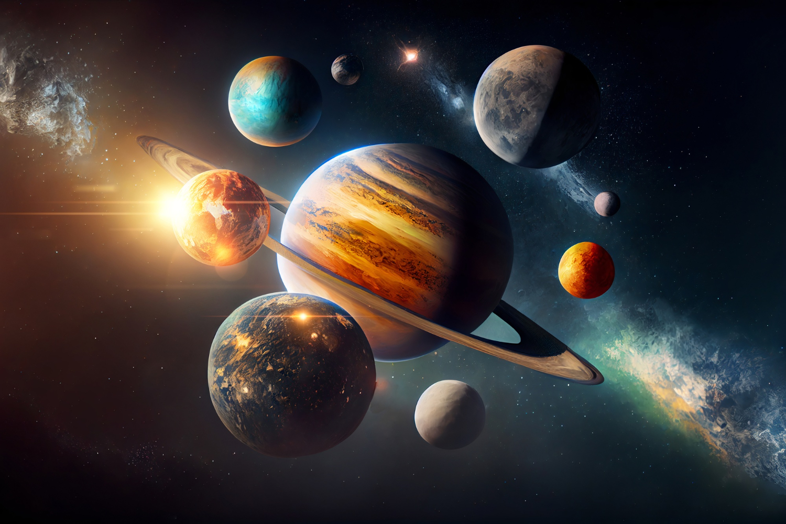

Hi! (:
Planets are objects whose definition came under scrutiny in 2006, when astronomers were debating whether Pluto could be considered a planet or not. At the time, the International Astronomical Union (the governing body on Earth for these decisions) ruled that a planet is a celestial body that orbits the sun, is massive enough to have a nearly round shape, and has cleared its orbit of debris. Under this designation, Pluto and similar small objects are considered "dwarf planets," although not everyone agrees with the designation. After the New Horizons spacecraft flew by Pluto in 2015, principal investigator Alan Stern and others again opened up the debate, saying the diversity of terrain on Pluto makes it more like a planet.
The definition of extrasolar planets, or planets outside the solar system, is still not firmed up by the IAU, but essentially astronomers understand it to mean objects that behave like planets in our neighborhood. The first such planet was found in 1992 (in the constellation Pegasus) and since that time, thousands of alien planets have been confirmed — with many more suspected. In solar systems that have planets under formation, these objects are often called "protoplanets" because they aren't quite the maturity of those planets we have in our own solar system.
